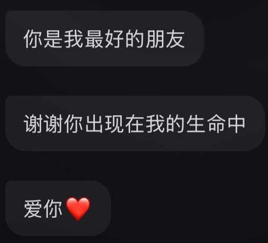

R·G
@L0OKMe3
在昨天晚上 我发这个帖子的时间线 同时那个女孩也向我表白 真心实意的 但是我直到现在才看到 她说的每一句话都是那么小心翼翼 她害怕我会有很强烈的自责愧疚感
是的 我会有 我真心觉得自己配不上她 但我真的好开心呀 认识你 我真的很幸福 至少现在 我爱你吖♡
你做的已经非常好了 不要担心 不用担心:)

命运石之门
@qhqq114514
这一次 是我自以为的主动的喜欢上了那个身为人的个体 或许是我的错觉 但至少现在是这样的 她真的好温柔 但我绝对不会向她表白 我要和她做好久的朋友